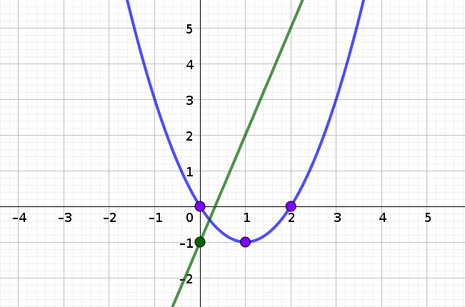
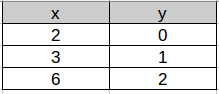
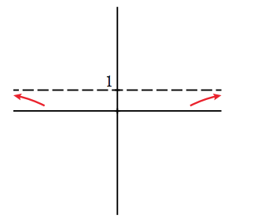

Concepte de funció
A l'ESO ja vares estudiar el concepte i les característiques d'una funció.
Una funció és una relació entre dues magnituds de manera que a un valor
de \(x\) (
variable independent) li feim correspondre
un únic
valor de \(y\) (variable dependent). Per a indicar que la variable \(y\) depèn o és funció
d'una altra, \(x\), empram la notació \(y = f(x)\), que es llegeix " \(y\) és la imatge de \(x\) mitjançant la
funció \(f\)".
Definició de funció!https://www.vitutor.com/fun/2/a_r.html
Aquesta relació funcional es pot expressar mitjançant
- una taula de valors
- una gràfica
- un enunciat
- una expressió matemàtica o fórmula
Avaluació inicial
Les funcions descriuen fenòmens quotidians, econòmics, psicològics, científics, ... Aquestes funcions s'obtenen
experimentalment a través de l'observació. Després, s'idealitzen o es modelitzen utilitzant famílies de funcions
ben conegudes que anomenam funcions elementals.
Per exemple, la funció lineal és adequada per descriure com s'allarga una molla de la qual pengem una massa
petita. Les funcions quadràtiques descriuen la trajectòria que descriu un projectil. La funció de proporcionalitat
inversa descriu la relació entre la pressió i el volum d'un èmbol ple de gas. Les funcions exponencials descriuen
creixements de poblacions i com canvia la quantitat de substància radioactiva en el temps. Les funcions logarítmiques s'empren per
mesurar el nivell de renou, la brillantor dels estels i el pH d'una dissolució. Finalment, les funcions trigonomètriques
apareixen en fenòmens que són periòdics (es repeteixen en el temps).
En aquest apartat s'enumeren aquestes funcions i es detallen els seus elements i propietats més importants.
La funció lineal
L'expressió d'una funció lineal és \(y=mx+n\), essent \(m\) el pendent i \(n\) l'ordenada a l'origen. Si \(m=0\)
es diu que la funció és constant i la gràfica és una recta horitzontal.
Funció lineal
La funció quadràtica o paràbola
L'expressió d'una funció quadràtica és \(y=ax^2+bx+c\). Quan \(a>0\) la funció és còncava \(\cup\) i si \(a\lt0\)
és convexa \(\cap\). El valor de \(b\) controla la posició del vèrtex (el màxim o mínim). L'abscissa del vèrtex s'obté de la
fórmula \(x_v=\dfrac{-b}{2a}\). L'ordenada del vèrtex es troba substituint \(x_v\) dins la funció.
Funció quadràtica
La funció de proporcionalitat inversa (hipèrboles)
L'expressió analítica és \(y=\dfrac{k}{x-a} + b\). La representació gràfica són hipèrboles amb les asímptotes
paral·leles als eixos de coordenades. Tenen una asímptota vertical a \(x=a\) i una horitzontal a \(y=b\).
Les asímptotes separen la funció en dues parts, cada part s'anomena branca. La funció de proporcionalitat inversa
té la forma \(y=\dfrac{k}{x}\).
Funció de proporcionalitat inversa
La funció arrel quadrada
Les funcions arrel \(y=k\sqrt{x-a}\) es representen com mitges paràboles amb eix paral·lel a l'eix X.Funció
arrel quadrada
Funcions a trossos
Les funcions a trossos les empram per descriure situacions on hi ha canvis de comportament. Per exemple: Un
cotxe està aturat a un semàfor i després accelera. La funció que descriu la velocitat presenta un canvi de
comportament en el moment que el conductor pitja l'accelerador. Aquesta funció expressa com
\[ v(t) = \left\{ \begin{array}{ll} 0 & \text{ si }\,\, 0 \leq t \leq 30 \\ 2(t-30) & \text{ si }\,\, t \gt 30 \end{array}\right.
\nonumber
\]
De 0 a 30 segons el cotxe està aturat i, després dels 30 s, la seva velocitat augmenta linealment.
Les funcions a trossos són fàcils de representar si sabem representar cadascun dels trams i param atenció
al seu comportament en els punts d'unió.
La funció valor absolut
Recordem que el valor absolut d'un nombre \(a\) coincideix amb el nombre \(a\) si és positiu o zero, o amb l'oposat
i si és negatiu
\[ |a| = \left\{ \begin{array}{ll} -a & \text{ si }\,\, a\leq 0 \\ a & \text{ si }\,\, a\gt 0 \end{array} \right. \tag{1}\]
Amb això, una funció de valor absolut es pot expressar com una funció a trossos
\[ |f(x)| = \left\{ \begin{array}{ll} -f(x) & \text{ si }\,\, f(x)\leq 0 \\ f(x) & \text{ si }\,\, f(x)\gt 0 \end{array}
\right. \tag{2}\]
Funció absolut
La funció \(y=x^2-2x\) és una paràbola que té el vèrtex en el punt \(V(1, -1)\). La paràbola
talla l'eix de les OX en \(x=0\) i \(x=2\). Es tracta d'una paràbola còncava perquè el paràmetre
\(a=1\) és positiu.
D'altra banda, la funció \(y=3x-1\) és una recta creixent perquè el seu pendent, \(m=3\) és positiu.
A més, l'ordenada a l'origen és \(-1\), és a dir talla l'eix OY a \(y=-1\).
La gràfica de les dues funcions és la següent

Identificam tres trossos, el primer és una branca de una funció de proporcionalitat
inversa, seguit d'un tros d'una funció exponencial creixent i acaba amb una
funció radical.
Farem tres taules de valors per conèixer algun punt de cada gràfica.
\(y= 1/x\)
\(y=2^x\)
\(y=\sqrt{x-2}\)

La gràfica és la següent
A part de les operacions bàsiques de suma, diferència, producte o quocient de funcions també és possible fer
la composició i la inversa d'una funció.
Composició de dues funcions
Considerem dues funcions \(f(x)=\sqrt{x}\) i \(g(x)=\sin x\). La primera funció, per a cada valor de \(x\) que li
donam, retorna la seva arrel quadrada. La segona funció, en canvi, retorna el sinus de \(x\).
Què passa si aplicam una funció darrera l'altra? Això és composar funcions. S'indica d'una aquestes formes:
\(f\circ g (x)\) o \(f(g(x))\). Aquesta figura mostra el seu significat
\(f(g(x)) = \sqrt{\sin x}\), primer calculam el sinus de l'angle i al resultat li feim l'arrel quadrada.
La composició de funcions és una operació no commutativa. Això vol dir que l'ordre de l'operació
canvia el resultat.
Efectivament \(g \circ f (x) = g(f(x))= \sin (\sqrt{x})\). Primer calculam l'arrel de l'angle i després feim
el sinus.
Si definim la funció \(h(x)=\dfrac{1}{x+1}\) també és possible composar les tres funcions. Vegem com fer-ho:
\[ f\circ g\circ h (x) = f(g(h(x))) = f(g( \dfrac{1}{x+1} )) = \tag{3}\] \[ = f(\sin \left( \dfrac{1}{x+1} \right) ) = \sqrt{\sin
\left( \dfrac{1}{x+1} \right) } \tag{4}\]
Funció inversa
No hem de confondre la inversa amb fer 1 dividit, són coses diferents.
Es defineix la inversa d'una funció \(f(x)\) i la indicam com \(f^{-1}(x)\) a aquella funció que compleix
\[ f(f^{-1}(x)) = f^{-1}(f(x)) = x \tag{5}\]
Funció inversa
No totes les funcions tenen una inversa o, millor dit, en alguns casos poden tenir-ne més d'una.
El procediment per calcular la inversa d'una funció és senzill
- Canviam el nom de les variables \(x \leftrightarrow y \)
- Aïllam la \(y\)
- Anomenam \(y = f^{-1}(x)\), la inversa
Escrivim la funció com \(y=\dfrac{3}{x-2}\), i canviam el nom de les variables
\[x=\dfrac{3}{y-2} \tag{6}\]
Aïllam la \(y\), \(y=\dfrac{3}{x}+2\). Aleshores la funció inversa és \(f^{-1}(x)=\dfrac{3}{x}+2\)
Podem comprovar que es compleix \(f(f^{-1}(x))=x\)
\[ f(\dfrac{3}{x}+2) = \dfrac{3}{ \left(\dfrac{3}{x}+2\right)-2 } = x \tag{7}\]
Si representam gràficament la funció i la seva inversa, trobam una propietat curiosa de la gràfica. Si doblegam
la gràfica per una línia que es troba a 45 graus, la funció es transforma en la seva inversa. Això passa
perquè quan feim aquest doblec, l'eix \(y\) passa damunt l'eix \(x\) i aquesta és precisament el canvi de variables
que feim per calcular la inversa.
Podeu comprovar que la funció \(y=x^2\) té dues inverses que són \(f^{-1}_1(x)=\sqrt{x}\) i \(f^{-1}_2(x)=-\sqrt{x}\)
s
- Per calcular la inversa de \(y=\frac{1}{x+2}\), canviam el nom de les lletres i aïllam
\(y\), \(x=\frac{1}{y+2}\) \(\rightarrow\) \(y+2 = \dfrac{1}{x}\) \(\rightarrow\) \(y=\dfrac{1}{x}-2\).
És a dir, la funció inversa és \(f^{-1}(x)=\dfrac{1}{x}-2\).
-
La composició \(f \circ g\) és \(f(g(x))=f(\sqrt{3x+1})= \dfrac{1}{\sqrt{3x+1}+2}\).
-
La composició \(g \circ f\) és \(g(f(x))=g(\dfrac{1}{x+2})= \sqrt{3\dfrac{1}{x+2} + 1}\).
Funció exponencial
Les funcions exponencials són del tipus \(y=b^x\). Si \(b>1\) són creixents i si \(0 \lt b \lt 1\)
són decreixents. Totes elles passen pel punt \((0, 1)\).
Funció exponencial
Un cas important és \(y=e^x\) on la base és el número \(e \simeq 2.7182818\).
La funció exponencial es manifesta a multitud de fenòmens de creixement animal, vegetal i econòmic. A tots ells
la variable independent és el temps. Vegem un exemple:
a) Inicialment significa \(t=0\), \(T(0)=52\cdot e^{-\frac{0}{15}}+24= 76 {}^\circ\)C
Passats 20 minuts \(T(20)=52\cdot e^{-\frac{20}{15}}+24= 37,71 {}^\circ\)C
b) Hem de resoldre l'equació \(30=52\cdot e^{-\frac{t}{15}}+24\). Aïllam l'exponencial a un membre \(e^{-\frac{t}{15}}
= \dfrac{30-24}{52}\) \(\rightarrow\) \(e^{-\frac{t}{15}} = \dfrac{6}{52}\), prenem logaritmes
\(-\frac{t}{15}= \ln \dfrac{6}{52}\) i finalment aïllam la incògnita \(t=-15\ln \dfrac{6}{52} \approx 32,392\) minuts.
c) Es tracta d'una exponencial decreixent que té una asímptota horitzontal a \(y=24\)

d) La temperatura de l'habitació és la temperatura de la tassa passat molt de temps, és a dir, el valor
de l'asímptota que hem vist a la gràfica anterior. \(T_{\text{habitacio}}=24 {}^\circ\)C.
Funció logarítmica
Les funcions logarítmiques són del tipus \(y=\log_b x\). Si \(b>1\) són creixents i si
\(0 \lt b \lt 1\) són decreixents. Totes elles passen pel punt \((1, 0)\).
Funció logarítmica
Dos casos importants són:
- Logaritme Neperià: \(y=\ln x\) si la base és el número \(e\)
- Logaritme decimal: \(y= \log x\) si la base és 10
Tipus de logaritmes
Es compleix que les funcions exponencials i logarítmiques són funcions inverses una de l'altra. Per exemple, la
funció inversa de \(y=2^x\) és \(y=\log_2 x\) i viceversa. Aleshores presenten les propietats de les funcions inverses,
és a dir, una s'obté de l'altra doblegant la gràfica per una línia a 45 graus.
Cal recordar la definició o comprovació d'un logaritme \(\log_b y = x \quad \leftrightarrow \quad b^x = y\).
a) \(y=\log_5 x\), b) \(y=5^x\), c) \(y=\log_{1/5} x\), d) \(y=(1/5)^{x}\)
Quan es treballa en funcions trigonomètriques recordeu que els angles venen donats en RADIANTS.
\[\begin{array}{ccc} 2\pi \text{ rad } &\quad \quad \Leftrightarrow \quad& \quad 360^\circ \\
\pi \text{ rad } &\quad \quad \Leftrightarrow \quad \quad& 180^\circ \\
\dfrac{\pi}{2} \text{ rad } &\quad \quad \Leftrightarrow \quad \quad& 90^\circ \\ &\cdots& \end{array} \nonumber\]
Vídeo que explica com canviar de la configuració de DEG a RAD i viceversa.
Les funcions trigonomètriques són \(y=\sin x\), \(y=\cos x\) i \(y=\tg x=\dfrac{\sin x}{\cos x}\). Aquestes funcions s'utilitzen per descriure fenòmens
periòdics com ara oscil·lacions i la propagació d'ones. Es defineix el període d'una oscil·lació \(T\) com l'interval més petit de \(x\)
pel qual es repeteix la funció.
Les funcions sinus i cosinus tenen període \(2\pi\) i oscil·len entre els valors \(-1\) i \(1\).
La funció tangent, en canvi, té període \(\pi\) i presenta asímptotes verticals per a tots els valors en què \(\cos x = 0\).
Funcions trigonomètriques inverses
Les funcions trigonomètriques inverses són \(\arcsin x\), \(\arccos x\) i \(\arctg x\). Per exemple, \(\arcsin \dfrac{1}{2}\) dóna l'angle
pel qual el seu sinus val \(\dfrac{1}{2}\). Recordem que l'angle vindrà donat en radiants i, per tant, la resposta
que obtindrem serà:
\[ \arcsin \dfrac{1}{2} = \dfrac{\pi}{6} \quad \text{ ja que } \quad \sin \dfrac{\pi}{6} = \dfrac{1}{2}\nonumber \]
Naturalment, si a l'angle de \(\dfrac{\pi}{6}\) (en graus \(30^\circ\)) li sumam voltes completes ( \(2\pi\, n\)) també complirà l'equació anterior. Per aquest motiu,
es diu que les funcions trigonomètriques inverses són funcions multivaluades. A la pràctica, per evitar aquesta situació, es decideix un interval
pels angles de cada funció trigonomètrica inversa. En el cas de la funció \(y=\arcsin x\) s'estableix que l'angle \(y\) estigui comprès entre
\([-\dfrac{\pi}{2}, \dfrac{\pi}{2}]\), és a dir, \([-90^\circ, 90^\circ]\).
Concepte de límit
Comencem entenent que significa acostar-se a un nombre. Donam una sèrie de definicions:
-
Direm que \(x\) tendeix a \(a\) per la dreta ( \(x \to a^+\)) si \(x\) pren valors majors que \(a\)
i cada vegada més propers a ell,
\(x \to 3^+ \quad\) si \(\quad x=3.1, 3.01, 3.001, \cdots\).
-
Direm que \(x\) tendeix a \(a\) per l'esquerra ( \(x \to a^-\)) si \(x\) pren valors menors que
\(a\) i cada vegada més propers a ell,
\(x \to 3^- \quad\) si \(\quad x=2.9, 2.99, 2.999, \cdots\).
-
Direm que \(x\) tendeix a \(a\) ( \(x \to a\)) si \(x\) pren valors cada vegada més propers a
\(a\), indistintament superiors o inferiors a ell,
\(x \to 3\quad\) si \(\quad x=3.1, 2.99, 3.001, \cdots\)
-
Direm que \(x\) tendeix a \(+\infty\) ( \(x \to +\infty\)) si \(x\) pren valors positius cada vegada més grans,
\(x \to +\infty\quad\) si \(\quad x=10, 1000, 1000000, \cdots\).
-
Direm que \(x\) tendeix a \(-\infty\) ( \(x \to -\infty\)) si \(x\) pren valors negatius cada vegada més grans,
\(x \to -\infty\quad\) si \(\quad x=-10, -1000, -1000000, \cdots\).
El límit ho podem definir com aquell lloc al qual, si no arribam, serem capaços d'acostar-nos tot el que vulguem. En sentit
matemàtic, el límit d'una funció en un punt, és el valor de la funció
\(f(x)\) al que s'acosta quan la variable independent ( \(x\)) s'aproxima a un valor determinat. Llavors, important: el límit d'una
funció és un valor de la variable y.
Si prenem la funció del gràfic adjunt, quan \(x\) s'aproxima al valor 2, el valor de la funció \(f(x)=x^2\) s'aproxima
al valor 4. A més, en aquest cas, no solament podrem acostar-nos tot quant vulguem, sinó podem arribar al mateix
valor, ja que el valor de la funció per a \(x = 2\) és \(f(2) = 4\).
En forma de límit escrivim
\[ \limx{2} f(x)=4 \tag{8}\]
i es llegeix "el límit quan x tendeix a 2 (tant per la dreta o l'esquerra) de la funció és igual a 4"
Si prenem la funció del gràfic adjunt, quan \(x\) s'aproxima al valor 0, el valor de la funció \(f(x)=\dfrac{1}{x}\)
s'aproxima cap a més o menys infinit. En aquest cas, necessitam especificar si ens acostam per la dreta o
per l'esquerra de 0.
En forma de límit escrivim
\[ \limx{0^-} f(x)=-\infty \quad\quad \limx{0^+} f(x)=\infty \tag{9}\]
Es llegeix, "el límit per l'esquerra de 0 de la funció és menys infinit i per la dreta de zero més infinit".
Anomenam límits laterals a \(x=a\) als límits per l'esquerra i la dreta de \(a\). Direm que el límit
d'una funció en un punt existeix si els dos límits laterals coincideixen , és a dir
El límit al punt \(a\) existeix si
\[ \limx{a^-} f(x) = \limx{a^+} f(x) = \limx{a} f(x) \tag{10}\]
Existència del límit
- a) \(+\infty\)
- b) \(-\infty\)
- c) 2
- d) 0
- e) 3
- f) 0
Límits a partir d'una taula de valors
L'apartat anterior ha introduït el concepte de límit i hem après com deduir-ne valors a partir d'una gràfica.
El problema és que en moltes ocasions no tenim la gràfica o no sabem quina forma té. En aquests casos aprendrem
com calcular el límit a través d'una taula de valors
Anem a calcular els límits de les funcions de l'apartat anterior \(f(x)=x^2\) i \(f(x)=\dfrac{1}{x}\) mitjançant taules
de valors
| \(\limx{2^-} x^2\) |
\(\limx{2^+} x^2\) |
\(\limx{0^-} \dfrac{1}{x}\) |
\(\limx{0^+} \dfrac{1}{x}\) |
| \(x=1.9\) \(y=3.61\) |
\(x=2.1\) \(y=4.41\) |
\(x=-0.1\) \(y=-10\) |
\(x=0.1\) \(y=10\) |
| \(x=1.99\) \(y=3.96\) |
\(x=2.01\) \(y=4.04\) |
\(x=-0.01\) \(y=-100\) |
\(x=0.01\) \(y=100\) |
| \(x=1.999\) \(y=3.996\) |
\(x=2.001\) \(y=4.004\) |
\(x=-0.001\) \(y=-1000\) |
\(x=0.001\) \(y=1000\) |
| \(\cdots\) |
\(\cdots\) |
\(\cdots\) |
\(\cdots\) |
| \(y \rightarrow 4\) |
\(y \rightarrow 4\) |
\(y \rightarrow -\infty\) |
\(y \rightarrow +\infty\) |
A mesura que la \(x\) s'acosta al valor on demanen el límit, ens fixam cap a on s'acosta el valor de \(y\). Aquest
valor extrapolat és el valor del límit que ens demanen.
Calcula el límit \[ \limx{1^-} \dfrac{\sqrt{x} -1}{x^2-1} \nonumber \] amb l'ajuda d'una taula de valors.
Donam cada vegada valors que s'apropin més a 1 per l'esquerra (és a dir, menors que 1):
Tipus de límits
Podem classificar els límits en un punt en:
-
Immediats: Només cal substituir el valor de \(x\) dins la funció.
-
Infinits: Quan substituïm valor de \(x\) dins la funció, trobam una divisió per zero \(\dfrac{k}{0}\).
El límit pot donar \(\pm \infty\). Cal calcular els dos límits laterals.
-
Indeterminats: Una indeterminació és una expressió que no sabem el seu valor si no feim
alguna cosa més. Cada tipus d'indeterminació té una tècnica per descobrir el seu valor.
Són indeterminacions expressions com ara:
-
\[ 0/0, \quad \infty/\infty, \quad \infty - \infty,\quad 0\cdot \infty,\quad 1^\infty, ...\nonumber \]
- Indeterminacions
La primera cosa que SEMPRE cal fer per calcular un límit és substituir el valor de \(x\) dins la funció. Si
la calculadora dóna un nombre, ja haurem acabat.
\[\limx{2} x^2 = 2^2 = 4 \quad\quad \text{Ja hem acabat!} \tag{11}\]
\[\limx{0} \dfrac{1}{x} = \dfrac{1}{0} = \text{Math Error} \quad\quad \text{Ups! Caldrà fer alguna cosa més} \tag{12}\]
Es tracta d'acostar-se a 2 per la dreta i l'esquerra. Calculem ambdós límits per separat
\(\limx{2^-} \dfrac{3x}{x-2} = - \infty \)
\(\limx{2^+} \dfrac{3x}{x-2} = + \infty \)
Es tracta de límits immediats, únicament cal substituir x dins la funció.
\(\limx{3} 2x^2-x+1=18-3+1=16\), \(\quad\limx{0} \frac{1}{x-1}=-1\), \(\quad\limx{-2} \sqrt{x^2+5}=\sqrt{9}=3\)
Es tracta d'un tros de paràbola per a valors menors que 1 unida amb un tros de recta per valors majors o iguals que 1.
Aquesta és la gràfica de la funció a trossos:
A partir de la gràfica, podem calcular els límits laterals a \(x=1\)
\(\displaystyle \lim_{x\to \mathtt{\text{1}^-}} f(x) = 4\)
\(\displaystyle \lim_{x\to \mathtt{\text{1}^+}} f(x) = 4\)
Atès que els dos límits laterals són iguals, podem assegurar que existeix el límit de la funció en el punt \(x=1\) i val:
\(\displaystyle \lim_{x\to \mathtt{\text{1}}} f(x) = 4\)
En aquesta secció aprendrem tècniques per determinar els límits del tipus \(k/0\) i la indeterminació \(0/0\).
La següent taula mostra cada regla juntament amb un exemple:
| Vull calcular \(\displaystyle \lim_{x \to a }f(x)\) |
| Quan substitueixo \(x\) per \(a\) trobo... |
Què he de fer? |
Exemple |
|
Un nombre
|
Res. Ja has acabat!
|
\(\displaystyle \lim_{x \to 2 } x^2 = 2^2 =4\)
|
|
\(\dfrac{k}{0}\)
|
Has de calcular els límits laterals per saber
si són \(-\infty\) o \(+\infty\)
|
\(\displaystyle \lim_{x \to 2 } \dfrac{1}{x-2}\)\(=\left\{ \begin{array}{l} \displaystyle \lim_{x \to 2^-} \dfrac{1}{x-2}=-\infty \\ \displaystyle \lim_{x \to 2^+} \dfrac{1}{x-2}=+\infty \end{array} \right.\)
|
|
\(\dfrac{0}{0}\) amb polinomis
|
Has de factoritzar i simplificar
la fracció.
|
\(\displaystyle \lim_{x \to 5 } \dfrac{x^2-25}{x-5}\)\(= \displaystyle \lim_{x \to 5 } \dfrac{(x+5)\cdot (x-5)}{x-5}\)\(= \lim_{x \to 5 } (x+5)= 10\)
|
|
\(\dfrac{0}{0}\) amb arrels
|
Heu de racionalitzar la fracció i simplificar
|
\(\displaystyle \lim_{x \to 3 } \dfrac{\sqrt{x+6}-3}{x-3}\)\(=\displaystyle \lim_{x \to 3 } \dfrac{(\sqrt{x+6}-3)\cdot (\sqrt{x+6}+3)}{(x-3)\cdot (\sqrt{x+6}+3)}\)\(\cdots=\frac{1}{6}\)
|
a) Immediat: \(\limx{1} \dfrac{x+3}{x^{2} -9} = \dfrac{1+3}{1-9} = - \dfrac{1}{2} \)
b) Infinit: \(\limx{3} \dfrac{x+3}{x^{2} -9} = \dfrac{6}{0} = \left\{ \begin{array}{l} \limx{3^-} \dfrac{x+3}{x^{2}
-9} = \dfrac{+6}{-0} = -\infty \\ \limx{3^+} \dfrac{x+3}{x^{2} -9} = \dfrac{+6}{+0} = +\infty \end{array}
\right.\)
c) Indeterminació 0/0: \(\limx{-3} \dfrac{x+3}{x^{2} -9} = \dfrac{0}{0} = \mathrm{IND}=\)
\(=\limx{-3} \dfrac{(x+3)}{(x+3)\cdot (x-3)}= \limx{-3}
\dfrac{1}{x-3}= -\dfrac{1}{6} \)
a) Es tracta d'un límit immediat (basta substituir) \(\limx{0} e^x +1 = e^0 + 1 = 1+1=2\)
b) \(\limx{1} \dfrac{3x-2}{x^2-1} = \dfrac{1}{0}\). Es tracta d'un infinit; calculam els dos límits laterals.
\(\left\{ \begin{array}{l} \limx{1^-} \dfrac{3x-2}{x^2-1} = \frac{+1}{-0}=-\infty \\ \limx{1^+} \dfrac{3x-2}{x^2-1} = \frac{+1}{+0}=+\infty \end{array}\right.\)
c) \(\limx{3} \dfrac{x^3-3x^2}{x^2-x-6} = \frac{0}{0}\). Trobam la indeterminació 0/0 amb polinomis.
Cal factoritzar el numerador (traient factor comú \(x^2\)) i el denominador (resolent l'equació de 2n grau):
\(\limx{3} \dfrac{x^3-3x^2}{x^2-x-6} =\limx{3} \dfrac{x^2\cdot\cancel{(x-3)}}{(x+2)\cdot \cancel{(x-3)}}\). Ara simplificam el factor repetit.
\(\limx{3} \dfrac{x^2}{x+2} = \frac{9}{5}\) i veim que es transforma en un límit immediat.
d) \(\limx{-2} \dfrac{x+2}{x^2-4}= \frac{0}{0}\). Trobam la indeterminació 0/0 amb polinomis.
Cal factoritzar el numerador (ja està factoritzat) i el denominador (identitat notable):
\(\limx{-2} \dfrac{x+2}{x^2-4}= \limx{-2} \dfrac{\cancel{(x+2)}}{\cancel{(x+2)}\cdot(x-2)}\). Tatxam el factor repetit,
\(\limx{-2} \dfrac{1}{x-2} = -\frac{1}{4}\) i veim que es transforma en un límit immediat.
Treballar amb infinits a vegades és contraintuïtiu. Això passa perquè l'infinit no és un nombre real i les
operacions són una mica especials. Us deixo en aquesta taula les operacions més habituals perquè les pugueu consultar
en cas de dubte:
| Operacions immediates amb infinits |
|
\[ \infty+\infty = \infty \quad\quad \infty\cdot\infty=\infty \quad\quad k\cdot \infty = \left\{ \begin{array}{ll} +\infty
& \text{ si } k\gt 0 \\ -\infty & \text{ si } k\lt 0 \end{array} \right. \nonumber\] \[ \dfrac{k}{\infty}=0
\quad\quad \dfrac{\infty}{0}=\pm \infty \quad\quad b^ \infty = \left\{ \begin{array}{ll}
+\infty & \text{ si } b\gt 1 \\ 0 & \text{ si } 0\lt b \lt 1 \end{array} \right.\nonumber\]
|
Algunes operacions són indeterminades i caldrà aplicar les regles a l'hora de calcular els límits
| Operacions indeterminades amb infinits |
|
\[ \infty-\infty \quad\quad \dfrac{\infty}{\infty} \nonumber\] \[ 0\cdot\infty \quad\quad 1^\infty \nonumber\]
|
La següent taula mostra els diferents casos que ens podem trobar quan calculam límits de funcions a l'infinit.
Llegiu l'exemple i fixeu-vos en la tècnica heu d'aplicar en cada cas.
| Vull calcular \(\displaystyle \lim_{x \to \pm \infty }f(x)\) |
| Quan substitueixo \(x\) per \(\pm \infty\) trobo... |
Què he de fer? |
Exemple |
|
\(\dfrac{k}{\pm\infty}\)
|
El límit val zero.
|
\(\displaystyle \lim_{x \to \infty } \dfrac{5}{x^2} = \frac{5}{\infty} =0\)
|
|
\(\dfrac{\infty}{\infty}\) amb polinomis
|
Cal dividir tots els termes del numerador i denominador
per la major potència de \(x\) del denominador.
|
\(\displaystyle \lim_{x \to \infty } \dfrac{2x^2+5}{3x^2-2x+1} =\)
dividim per \(x^2\)
\(\displaystyle \lim_{x \to \infty } \dfrac{2+5/x^2}{3-2/x+1/x^2} = \frac{2}{3}\)
|
|
\(\dfrac{\infty}{\infty}\) amb arrels
|
Igual que abans però tenint en compte que el major
exponent del denominador queda dividit per 2 degut
a l'arrel quadrada.
|
\(\displaystyle \lim_{x \to \infty } \dfrac{2x+1}{\sqrt{3x^2+1}} =\)
dividim per \(x\)
\(\displaystyle \lim_{x \to \infty } \dfrac{2+1/x}{3+1/x^2} = \frac{2}{\sqrt{3}}\)
|
|
\(\infty- \infty\) amb polinomis
|
Cal calcular el mín.c.m, i efectuar la resta
|
\(\displaystyle \lim_{x \to \infty } \dfrac{x^2}{x+1} - x =\) \( \cdots =
\displaystyle \lim_{x \to \infty } \dfrac{-x}{x+1} = -1 \)
|
|
\(\infty- \infty\) amb arrels
|
Cal racionalitzar i simplificar l'expressió
|
\(\displaystyle \lim_{x \to \infty } \sqrt{x^2-1}-x = \)
\(\displaystyle \lim_{x \to \infty } (\sqrt{x^2-1}-x)\cdot \frac{(\sqrt{x^2-1}+x)}{(\sqrt{x^2-1}+x)}\)
\( =\cdots = 0 \)
|
a) Donat que es tracta d'un polinomi només consideram la potència de major grau
\[\limx{-\infty} x^3-2x^2+1 = \limx{-\infty} x^3 = (-\infty)^3 = - \infty \tag{13}\]
b) \(\limx{+\infty} \dfrac{2}{x^2-1} = \dfrac{2}{\infty^2-1} = \dfrac{2}{\infty}=0\)
c) Trobam una indeterminació \(\infty/\infty\). Cal dividir tots els termes per la major potència del
denominador. En aquest cas dividim tots els termes entre \(x^2\)
\[ \limx{+\infty} \dfrac{3x^2+x-5}{2x^2+1} = \dfrac{\infty}{\infty} = IND= \limx{+\infty} \dfrac{\frac{3x^2}{x^2}+\frac{x}{x^2}-\frac{5}{x^2}}{\frac{2x^2}{x^2}+\frac{1}{x^2}}=
\nonumber\] \[ \limx{+\infty} \dfrac{3+\frac{1}{x}-\frac{5}{x^2}}{2+\frac{1}{x^2}}= \dfrac{3+\cancel{\frac{1}{\infty}}-\cancel{\frac{5}{\infty}}}{2+\cancel{\frac{1}{\infty}}}
= \frac{3}{2} \tag{14}\]
d) Trobam una indeterminació \(\infty/\infty\). Cal dividir tots els termes per la major potència del
denominador. En aquest cas dividim tots els termes entre \(x\)
\[ \limx{+\infty} \dfrac{2-x^2}{x+3} =\dfrac{\infty}{\infty} = IND= \limx{+\infty} \dfrac{\frac{2}{x}-\frac{x^2}{x}}{\frac{x}{x}+\frac{3}{x}}
= \nonumber\] \[ \limx{+\infty} \dfrac{\frac{2}{x}-x}{1+\frac{3}{x}} = \dfrac{\cancel{\frac{2}{\infty}}-\infty}{1+\cancel{\frac{3}{\infty}}}
= - \infty \tag{15}\]
a) Donat que es tracta d'un polinomi només consideram la potència de major grau
\[\limx{-\infty} x^4 - 2x^2 +5x -3 = \limx{-\infty} x^4 = (-\infty)^4 = + \infty \tag{16}\]
b) Donat que es tracta d'un polinomi només consideram la potència de major grau
\[\limx{\infty} -2x^2+5x+2 = \limx{\infty} -2x^2 = -2(\infty)^2 = - \infty \tag{17}\]
c) \(\limx{+\infty} \dfrac{-3}{x-2} = \dfrac{-3}{\infty-1} = \dfrac{-3}{+\infty}=0\)
d) Trobam una indeterminació \(\infty/\infty\). Cal dividir tots els termes per la major potència del
denominador. En aquest cas dividim tots els termes entre \(x^3\)
\[ \limx{+\infty} \dfrac{-2x^3+3x^2-1}{x^3+x^2-x+1} = \dfrac{\infty}{\infty} = IND= \limx{+\infty} \dfrac{-2x^3/x^3 + 3x^2/x^3 - 1/x^3 }{x^3/x^3 +x^2/x^3-x/x^3 +1/x^3 }=
\nonumber\] \[ \limx{+\infty} \dfrac{-2+3/x-1/x^3}{1+1/x-1/x^2+1/x^3}= -2 \tag{18}\]
e) Trobam una indeterminació \(\infty/\infty\). Cal dividir tots els termes per la major potència del
denominador. En aquest cas dividim tots els termes entre \(x^2\)
\[ \limx{-\infty} \dfrac{x^3 - x^2 - 5x}{x^2+1} =\dfrac{\infty}{\infty} = IND= \limx{-\infty} \dfrac{x^3/x^2 - x^2/x^2 - 5x/x^2}{x^2/x^2+1/x^2}
= \nonumber\] \[ \limx{-\infty} \dfrac{x - 1 - 5/x}{1+1/x^2} = \dfrac{-\infty - 1 + \cancel{5/\infty}}{1+\cancel{1/\infty}}
= - \infty \tag{19}\]
Microtasca d'aprenentatge BAT_MAT1 4.1
Et recomano que intentis realitzar aquesta tasca abans de seguir amb els continguts del lliurament.
Fins ara hem introduït el concepte de límit. En les properes seccions, utilitzarem el límit per analitzar
les asímptotes i la continuïtat de les funcions.
Les asímptotes d'una funció, en cas d'existir, són rectes a les quals la funció s'aproxima tant com volguem. Donat que, les
asímptotes són rectes, aquestes podran ser verticals, horitzontals i obliqües.
Les asímptotes verticals són parets les qual la funció no pot atravessar.
Per a que una funció racional \(f(x)=\dfrac{P(x)}{Q(x)}\) tengui una asímptota vertical, el denominador ha d'ésser igual a
zero i el numerador diferent de zero. El procediment consisteix resoldre l'equació \(Q(x)=0\).
Asímptota vertical
Ens hem d'assegurar que no tenim 0/0, perquè podria no ésser una asímptota.
Per tenir una asímptota vertical, els límits al punt han d'ésser més o menys infinit.
Per a cada valor \(x=a\) tal que \(Q(a)=0\), estudiam la posició relativa calculant els dos límits laterals:
\[ \limx{a^-} \dfrac{P(x)}{Q(x)}=\pm \infty \qquad\qquad \limx{a^+} \dfrac{P(x)}{Q(x)}=\pm\infty \tag{20}\]
d'aquesta forma sabem si s'acosta cap a \(\pm \infty\) al voltant de l'asímptota vertical.
Igualam a zero del denominador de la funció \(x^2-2x=0\). Resolem l'equació de segon grau incompleta
\(x=0\); \(x=2\).
Calculam els límits laterals al voltant de cada arrel.
- \(x=0\): \(\limx{0^-} \dfrac{x^2+2}{x^2-2x} = \dfrac{+2}{+0} = +\infty\); \(\limx{0^+} \dfrac{x^2+2}{x^2-2x}
= \dfrac{+2}{-0} = -\infty\)
- \(x=2\): \(\limx{2^-} \dfrac{x^2+2}{x^2-2x} = \dfrac{+6}{-0} = -\infty\); \(\limx{2^+} \dfrac{x^2+2}{x^2-2x}
= \dfrac{+6}{+0} = +\infty\)
Representam gràficament les dues asímptotes verticals a \(x=0\) i \(x=2\) juntament amb els límits obtinguts:
Perquè una funció racional \(f(x)=\dfrac{P(x)}{Q(x)}\) tengui una asímptota horitzontal, el grau \(P\leq \)grau \(Q\). L'asímptota
és la recta horitzontal \(y=L\), essent \(L=\limx{\infty }f(x)\).
Asímptota horitzontal
Nota: Quan grau \(P \lt grau Q\), la recta \(y=0\) és l'asímptota horitzontal.
Per saber si ens acostam per damunt o davall de l'asímptota horitzontal \(y=L\) construïm una taula amb dos
valors grans (un negatiu i l'altre positiu). Si la funció és més petita que l'asímptota, ens acostam per davall
d'ella i sinó per damunt.
Aquesta funció no té asímptotes verticals perquè l'equació \(1+x^2=0\) no té solucions.
Sí que tindrà una asímptota horitzontal a un valor de \(y\) diferent de zero, perquè els graus del numerador
i denominador són iguals.
L'asímptota és el valor del límit a l'infinit
\[ \limx{\infty} \dfrac { x ^ { 2 } } { 1 + x ^ { 2 } } = \dfrac{\infty}{\infty} = IND = \limx{\infty} \dfrac { \frac{x^2}{x^2}
} { \frac{1}{x^2} + \frac{x^2}{x^2} } = \limx{\infty} \dfrac {1 } { \frac{1}{x^2} + 1 } = \dfrac {1 }
{ \frac{1}{\infty} + 1 } = 1 \tag{21}\]
Per resoldre la indeterminació \(\infty/\infty\) hem dividit tot per la major potència de \(x\) del denominador.
Hem trobat que la recta \(y=1\) és una asímptota horitzontal.
Per saber la posició relativa (si ens acostam per damunt o davall de \(y=1\)) construïm una taula amb
un valor gran de \(x\) positiu i negatiu.
| \(x\) |
\(f(x)\) |
Posició |
| \(-100\) |
\(0.9999 \lt 1\) |
Per davall |
| \(+100\) |
\(0.9999 \lt 1\) |
Per davall |

Resolem l'equació \(x - 2=0\) i trobam les solucions \(x=2\) . La funció pot tenir fins
1 asímptotes verticals.
Calculam els límits laterals en cada solució:
Com que el grau del numerador és menor o igual al grau del denominador, té una asímptota horitzontal.
Calculam el límit a l'infinit: \(\displaystyle \lim_{x\to \infty} \dfrac{- 4 x - 5}{x - 2}\) = \(\dfrac{-\infty}{\infty}\) =IND.= \(\displaystyle \lim_{x\to \infty} \dfrac{\frac{- 4 x - 5}{x}}{\frac{x - 2}{x}}\) = \(\displaystyle \lim_{x\to \infty} \dfrac{-4 - \frac{5}{x}}{\frac{x - 2}{x}}\) = \(-4\)
La recta \(y=-4\) és una asímptota horitzontal. Per saber com ens acostam a la asímptota, completam la següent taula:
| x | f(x) | Asímptota | Posició |
|---|
| -100 | -3.873 | -4 | Per damunt |
| 100 | -4.133 | -4 | Per davall |
Amb aquesta informació podem representar les asímptotes i la forma en què la funció s'acosta a elles.
Resolem l'equació \(x^{2} - 2 x=0\) i trobam les solucions \(x=0\) , \(x=2\) . La funció pot tenir fins
2 asímptotes verticals.
Calculam els límits laterals en cada solució:
\(x=0\) :
\(\displaystyle \lim_{x\to 0^{-}} \frac{3}{x^{2} - 2 x}\) \(=\infty\) i \(\displaystyle \lim_{x\to 0^{+}} \frac{3}{x^{2} - 2 x}\) = \(=-\infty\)
La recta \(x=0\) és una asímptota vertical.
\(x=2\) :
\(\displaystyle \lim_{x\to 2^{-}} \frac{3}{x^{2} - 2 x}\) \(=-\infty\) i \(\displaystyle \lim_{x\to 2^{+}} \frac{3}{x^{2} - 2 x}\) = \(=\infty\)
La recta \(x=2\) és una asímptota vertical.
Com que el grau del numerador és menor o igual al grau del denominador, té una asímptota horitzontal.
Calculam el límit a l'infinit: \(\displaystyle \lim_{x\to \infty} \dfrac{3}{x^{2} - 2 x}\) = \(0\)
La recta \(y=0\) és una asímptota horitzontal. Per saber com ens acostam a la asímptota, completam la següent taula:
| x | f(x) | Asímptota | Posició |
|---|
| -100 | +0.0002941 | 0 | Per damunt |
| 100 | +0.000306 | 0 | Per damunt |
Amb aquesta informació podem representar les asímptotes i la forma en què la funció s'acosta a elles.
Una funció racional \(f(x)=\dfrac{P(x)}{Q(x)}\) té una asímptota obliqua si
el grau del numerador és igual el grau del denominador més u, grau \(P= \)grau \(Q+1\). L'asímptota
és una recta de la forma \(y=mx+n\).
Si una funció té una asímptota obliqua no en tindrà d'horitzontal. Ara bé, potser que
en tingui de verticals i caldrà calcular-les.
Per determinar l'asímptota obliqua feim la divisió \(P(x):Q(x)\). Del quocient de la divisió podem
obtenir l'expressió de l'asímptota. Per exemple, donada la funció \(f(x)=\dfrac{x^3+5x+1}{x^2+2x}\),
veim que té una asímptota obliqua perquè el grau del numerador és 3 i el denominador és un menys (2).
Realitzam la divisió de polinomis
\[ \begin{array}{l} {\, \, \, \, x^3\quad\quad+5x+1\quad \quad \quad \quad \underline{|}\underline{\quad
x^{2} +2x \quad }} \\ {\underline{-x^3-2x^2 }\, \, \, \, \, \, \, \, \, \, \, \, \, \,
\, \, \, \, \, \, \, \, \, \, \, \, \, \, \, \, \, \, \, \, \, \, \, \, \, \, \quad x-2\, }
\\ {\, \, \, \, \, \, \, \, \, \, \, \,-2x^2+5x+1} \\ {\, \, \, \, \, \, \, \,
\, \, \, \, \underline{2x^2+4x}} \\ {\, \, \, \, \, \, \, \, \, \, \, \, \, \, \, \, \,
\, \, \, \, \, \, \, \underbrace{9x+1}} \end{array} \tag{22}\]
Atès que la divisió té quocient \(x-2\), l'equació de l'asímptota obliqua és
la recta \(y=x-2\).
Per saber si ens acostam per damunt o davall de l'asímptota obliqua construïm una taula amb dos
valors grans (un negatiu i l'altre positiu). Si la funció és més petita que l'asímptota,
ens acostam per davall d'ella i sinó per damunt. Anem a fer els càlculs.
| \(x\) |
\(y=x-2\) |
\(f(x)\) |
Posició |
| \(-100\) |
\(-102\) |
\(-102.91\) |
\(f\) és més negativa que l'asímptota. \(f\) s'acosta per davall |
| \(+100\) |
\(98\) |
\(98.0883\) |
\(f\) és més gran que l'asímptota. \(f\) s'acosta per damunt |
La situació gràfica es mostra a la figura següent
Com que sabem que té l'asímptota obliqua \(y=x-2\), no caldrà mirar si en té d'horitzontal.
Ara bé, el denominador de la funció \(x^2+2x=0\) s'anul·la quan \(x=0\) i \(x=-2\). El més
probable que siguin dues asímptotes verticals. Simplement ens hem d'assegurar que els límits
laterals en cada punt siguin infinit. Anem a calular aquests limits
\[\lim_{x\to -2^-} \dfrac{x^3+5x+1}{x^2+2x}=\dfrac{-17}{+0}=-\infty \nonumber\]
\[\lim_{x\to -2^+} \dfrac{x^3+5x+1}{x^2+2x}=\dfrac{-17}{-0}=+\infty \nonumber\]
\[\lim_{x\to 0^-} \dfrac{x^3+5x+1}{x^2+2x}=\dfrac{1}{-0}=-\infty \nonumber\]
\[\lim_{x\to 0^+} \dfrac{x^3+5x+1}{x^2+2x}=\dfrac{1}{+0}=+\infty \nonumber\]
Amb aquesta informació podem representar les asímptotes i la forma en què la funció s'acosta a elles.
Ens fixam amb els graus del numerador i el denominador
a) \(f(x)\) té una asímptota horitzontal a \(y=0\).
b) \(f(x)\) té una asímptota horitzontal a \(y=2\).
c) \(f(x)\) té una asímptota obliqua \(y=3x\).
d) \(f(x)\) no té ni asímptota horitzontal ni obliqua.
En cap dels casos existeixen asímptotes verticals perquè els denominadors
no s'anul·len mai, \(x^2+4=0\) no té cap solució. De les gràfiques següents
es pot deduir la posició relativa que ens demanen